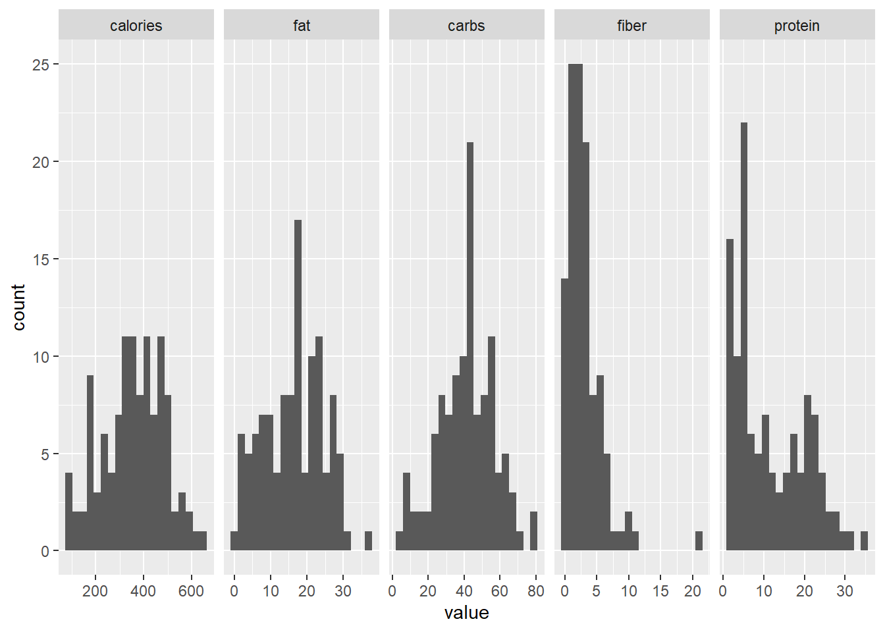
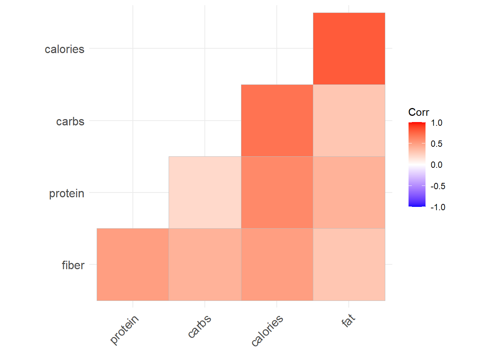
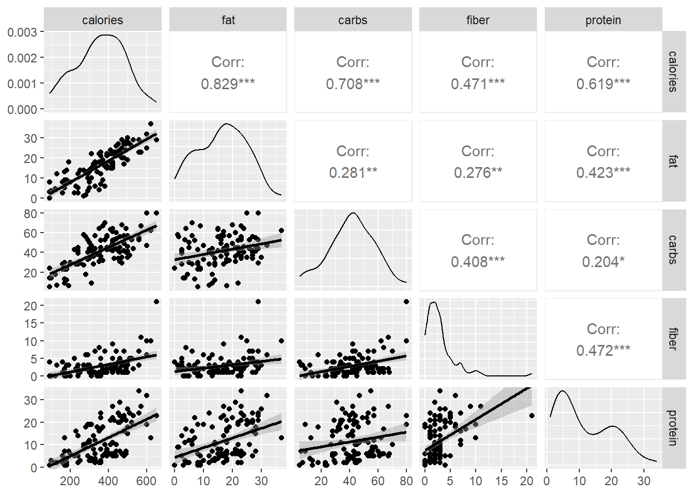
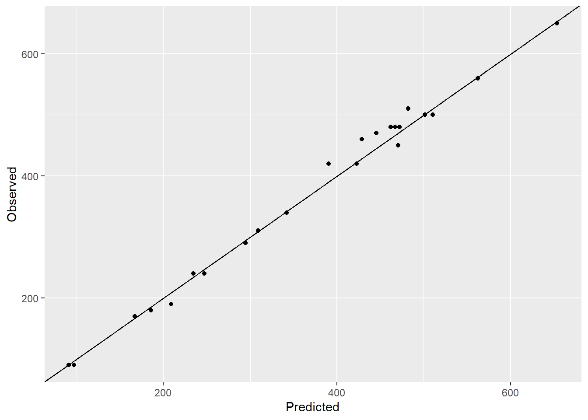
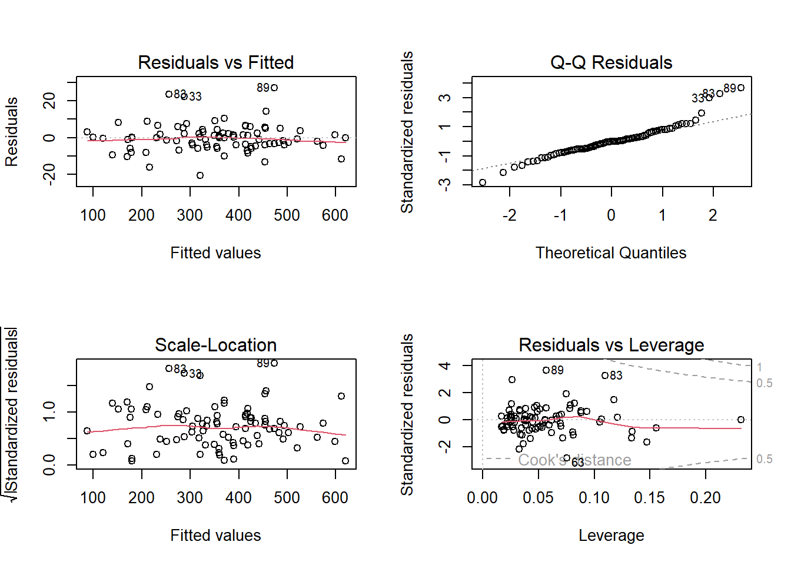

# Load the packages
library(reshape2)
library(ggplot2)
library(ggh4x)
library(ggcorrplot)
library(car) # to calculate the VIF values
library(GGally) # for pairs plot using ggplot frameworkStarbucks is one of the most valued coffee chain in the world. A lot of people like to consume the food available at starbucks. But how good are they in terms of the nutritional value?
I found this dataset on Kaggle which gives the nutritional information about their food products. In my precious post, I built a multiple linear regression model to predict the calories in beverage based on the nutritional contents of the beverage. Now we will try to do the same for the food products.
First, we look at the exploratory data analysis and later try some simple regression models. First let us access and process the data through R.
# Get starbucks data from github repo
path <- "https://raw.githubusercontent.com/adityaranade/starbucks/refs/heads/main/data/starbucks-menu-nutrition-food.csv"
data0 <- read.csv(path, header = TRUE)
# Data processing
# change the column names
colnames(data0) <- c("name", "calories", "fat",
"carbs", "fiber","protein")
# Check the first 6 rows of the dataset
data0 |> head() name calories fat carbs fiber protein
1 Chonga Bagel 300 5 50 3 12
2 8-Grain Roll 380 6 70 7 10
3 Almond Croissant 410 22 45 3 10
4 Apple Fritter 460 23 56 2 7
5 Banana Nut Bread 420 22 52 2 6
6 Blueberry Muffin with Yogurt and Honey 380 16 53 1 6# Check the type of data
data0 |> str()'data.frame': 113 obs. of 6 variables:
$ name : chr "Chonga Bagel" "8-Grain Roll" "Almond Croissant" "Apple Fritter" ...
$ calories: int 300 380 410 460 420 380 420 240 350 320 ...
$ fat : num 5 6 22 23 22 16 17 12 22 16 ...
$ carbs : int 50 70 45 56 52 53 61 28 38 36 ...
$ fiber : int 3 7 3 2 2 1 2 1 0 1 ...
$ protein : int 12 10 10 7 6 6 5 5 2 8 ...The data from second column should be numeric but shows as character. So we first convert it into numeric form and also exclude the rows with missing information
# convert the data to numeric second row onwards
data0$calories <- as.numeric(data0$calories)
data0$fat <- as.numeric(data0$fat)
data0$carbs <- as.numeric(data0$carbs)
data0$fiber <- as.numeric(data0$fiber)
data0$protein <- as.numeric(data0$protein)
# Check the type of data again
data0 |> str()'data.frame': 113 obs. of 6 variables:
$ name : chr "Chonga Bagel" "8-Grain Roll" "Almond Croissant" "Apple Fritter" ...
$ calories: num 300 380 410 460 420 380 420 240 350 320 ...
$ fat : num 5 6 22 23 22 16 17 12 22 16 ...
$ carbs : num 50 70 45 56 52 53 61 28 38 36 ...
$ fiber : num 3 7 3 2 2 1 2 1 0 1 ...
$ protein : num 12 10 10 7 6 6 5 5 2 8 ...# Check the rows which do not have any entries
ind.na <- which(is.na(data0[,2]))
length(ind.na) # 0 NA values[1] 0data <- data0Now that we have the data ready, let us look at the histogram each of the variables namely calories, fat, carbs, fiber, protein and sodium
# Data for histogram
melted_data <- melt(data, id.vars="name")
# Plot the histogram of all the variables
ggplot(melted_data,aes(value))+
geom_histogram(bins = 20)+
facet_grid2(~variable, scales="free")
Histogram does not give much information. Let us look at the correlation plot to get an idea of how the variables are correlated with each other.
# correlation plot of all the variables
corr <- round(cor(data[,-1]), 1)
p.mat <- cor_pmat(mtcars) # correlation p-value
# Barring the no significant coefficient
ggcorrplot(corr, hc.order = TRUE,
type = "lower", p.mat = p.mat)
# All positive correlationAll the variables are positively correlated (which indicates when one variable increases, the other variable will increase as well. ) which is not a surprising. Most important part is the correlation of calories with all the other variables are considerably high. Next we look at the pairs plot which will show the bivariate scatter plots as well as the correlation between each variables.
ggpairs(data,columns = 2:ncol(data),
lower = list(continuous = "smooth"))
Most of the bivariate scatter plots indicate a linear relationship between the variables. The most important result according to us is the relationship between calories with all the other variables. We can now use the dataset for predictions where we try to predict the calories based on the fat, carb, fiber and protein content using multiple linear regression.
# split the data into training and testing data
seed <- 23
set.seed(seed)
ind <- sample(floor(0.8*nrow(data)),
replace = FALSE)
# Training dataset
data_train <- data[ind,-1]
# Testing dataset
data_test <- data[-ind,-1]
# Multiple linear regression using raw data
model <- lm(calories ~ fat + carbs + fiber + protein , data = data_train)
summary(model)
Call:
lm(formula = calories ~ fat + carbs + fiber + protein, data = data_train)
Residuals:
Min 1Q Median 3Q Max
-20.675 -4.029 -0.109 3.102 27.055
Coefficients:
Estimate Std. Error t value Pr(>|t|)
(Intercept) 0.14909 2.73597 0.054 0.9567
fat 8.80325 0.10889 80.842 <2e-16 ***
carbs 4.01725 0.06185 64.955 <2e-16 ***
fiber -0.90654 0.46687 -1.942 0.0555 .
protein 4.16692 0.14242 29.258 <2e-16 ***
---
Signif. codes: 0 '***' 0.001 '**' 0.01 '*' 0.05 '.' 0.1 ' ' 1
Residual standard error: 7.6 on 85 degrees of freedom
Multiple R-squared: 0.9962, Adjusted R-squared: 0.996
F-statistic: 5508 on 4 and 85 DF, p-value: < 2.2e-16# Prediction on the testing dataset
y_pred <- predict(model, data_test)
# Create a observed vs. predicted plot
ggplot(NULL,aes(y_pred,data_test$calories))+geom_point()+
labs(y = "Observed", x="Predicted")+geom_abline()
# Calculate RMSE
rmse <- (y_pred-data_test$calories)^2 |> sum() |> sqrt()
rmse[1] 70.16698# Check the variance inflation factor
vif_values <- vif(model)
vif_values fat carbs fiber protein
1.237161 1.298276 1.880520 1.762035 The model is decent with RMSE 70.17 and the observed vs. predicted plot also looks decent with all the points just around the line. The variation inflation factor (VIF) is also below 2 for all the variables. We will look at the residual plots to check if all the assumptions of multiple linear regression are satisfied.
# Check the assumptions of the regression model
par(mfrow = c(2, 2))
plot(model)
Nothing in the residual plots indicate a cause of concern regarding the model.